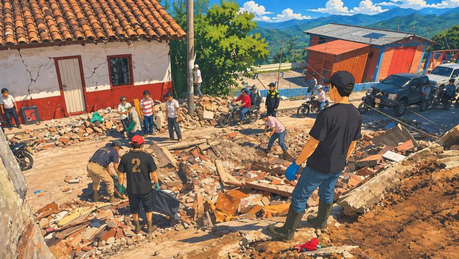
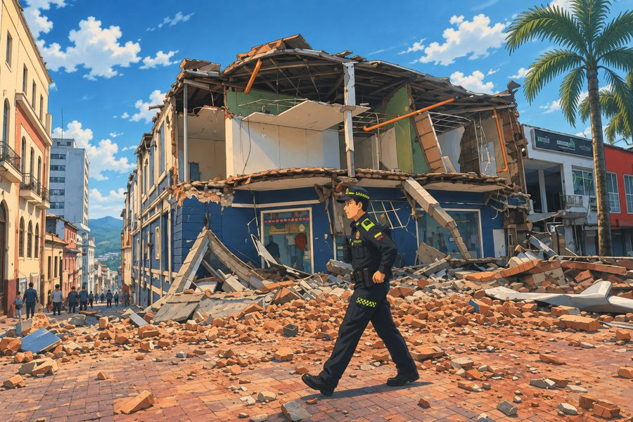

Plataforma Departamental de Consolidación del PAE
Los 27 municipios de Caldas reportan aquí, con un mismo formato, qué se dañó, qué se va a hacer, cuánto cuesta y qué tan listo está cada proyecto. Con esa información la Gobernación construye la Cartera Única y la traduce a la taxonomía del PAE Nacional.
Sismo M 7,4 · 10 de agosto de 2026Decreto 392 · calamidad públicaAvance del reporte municipal
Estado de cada municipio en la plataforma. Las cifras son agregadas; los detalles de cada reporte son de uso de la Gobernación.
Tablero por municipio
Elija un municipio o vea el agregado de todos los que ya reportaron. También puede hacer clic en la tarjeta de un municipio.
Costo de las intervenciones por eje
Millones de pesos · el centro muestra el total
Necesidades por sector
Número de necesidades reportadas
Costo por línea del PAE
Millones de pesos · intervenciones con línea asignada
Costo por municipio
Millones de pesos · intervenciones reportadas
Lo que estamos reconstruyendo
Detrás de cada cifra de esta plataforma hay una vereda, una plaza o una casa que hay que levantar de nuevo.


Cartera reportada frente al PAE
Costo de las intervenciones reportadas por los 26 municipios distintos de Manizales, comparado con la necesidad estimada por línea en el PAE departamental (19-oct-2026). Manizales se lee aparte porque el dimensionamiento departamental cubre a los otros 26.
Eje 1 · Rehabilitación
Millones de pesos · barra = reportado / necesidad estimada
Eje 2 · Reconstrucción resiliente
Millones de pesos · barra = reportado / necesidad estimada
Línea base de afectaciones
Cada cifra se muestra con su fuente y su fecha de corte; las series no se suman ni se promedian entre sí.
Viviendas afectadas por municipio
EDAN, corte 14-sep-2026 · Manizales: 11.513 (49 %), se muestra aparte
Por subregión
EDAN, corte 14-sep-2026
| Indicador | Cifra | Fuente y corte |
|---|---|---|
| Centros de salud afectados | 18 | EDAN, 14-sep-2026 |
| Sistemas de acueducto afectados | 53 (20 municipales, 33 veredales) | EDAN; Fondo Milagro ambiental, 27-oct |
| Centros comunitarios afectados | 171 | EDAN, 14-sep-2026 |
| Familias inscritas en el RUD | 22.132 (45.324 personas) | RUD UNGRD, 27-oct-2026 |
Acciones de la Gobernación
Del día cero a hoy. El equipo coordinador mantiene esta cronología al día.
Calendario y vencimientos
Días restantes de cada hito. Ritmo de reporte: actualización municipal cada quince días y corte consolidado mensual.
Proyectos Fase III
Proyectos que los municipios reportan con estudios y diseños definitivos (Fase III de la MGA: factibilidad) o ya listos para gestionar recursos. Son los que pueden presentarse de inmediato al Fondo Milagro, al SGR, a la Subcuenta Sismo 2026, a obras por impuestos o a cooperación.
Cargando…